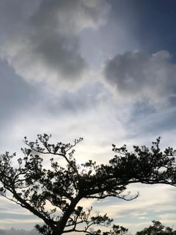
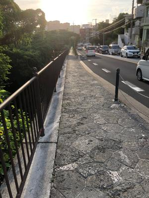
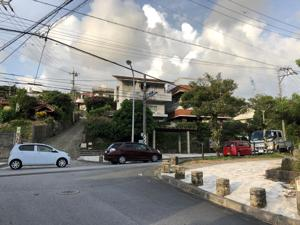
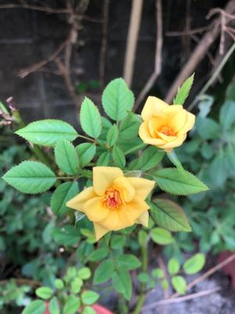

うるがいの話 ある日
最新: 雷の音【うるがいの話 ある日】とは 一日だけのプログです
『うるがいの話』の最新一日だけのプログで、通信料が少なく経済的だ。カニの画像をクリックすると全ての日付が載る『うるがいの話』サイトを表示します
|
|
【うるがいの話】 うるがい(ｳﾙｶﾞｲ urugai)とは、『もずくがに』の名前でとても大きくなります。 |
|---|---|
|
|
【カミマヤーの話】 猫のことを方言でマヤーといいます。カミマヤー（kamimayaa）とは、神の猫のことです。 |
|
【たながぁの音楽】 たながぁ（ﾀﾅｶﾞｰ tanagaa）とは手長えびのことで、何種類かあり大きいのは車 エビぐらいになります。 |

|
【ぶながぁの話】 ぶながぁ(ﾌﾞﾅｶﾞｰ bunagaa)とは、赤い髪の毛、赤い身体、そして身長は１ｍ２０ｃｍ ぐらい、川の蟹を食べているの目撃された。場所は沖縄県国頭郡大宜味村のと ある村僕の隣近所に住んでいる爺さんから、聞いた話です。 |
|
|
【ギーマの話】 ギーマ(giima)とは、山原の里山に咲くスズランに似た、 花を付けます。実は食べられます、 気が付くと口の周りが紫になっています。 |
2022年08月27日 (土）雷の音
16:10
  
深夜の３時過ぎ雷の音で目が覚める。でもなかなか雨は降らない、ふとウクラ
イナの砲弾の爆音を想像してしまう。３時半頃を過ぎて雨が降ってきた。しば
らくするとスピーカーから、何やら注意してくださいとアナウンス。そしてい
つ時だろうか、２回目のスピーカーから注意が流された。うるさいと・・・・
そしてスマホからけたましい音が、覗くと緊急速報だ（６時１１分）。オオカ
ミ少年の物語を思い出す。警報出し過ぎだろう、３．１１の津波警報も、それ
以前の警報の出し過ぎになれてしまったのが、逃げ遅れの一因と思っている。

昨日ジョギングしていたら混雑している首里向けの車線を、救急車がチンタラ
走っている。しばらくすると芸大首里崎山キャンパス近くの交差点に面して建
っている民家の玄関に、高齢者のマークをつけた軽自動車が頭から突っ込んで
いた。チラっとみた後、いつものように石畳に向けて下っていく。当たり前だ
が、交差点へ向かう上りの道は混んでしまっている。私が、地獄坂を上るため
左折する金城石畳の麓まで車は繋がっていた。これらの車は、何時になったら
交差点にたどり着くのだろう。
１５時５８分 ビットコインの総資産 ￥８、０３９↓